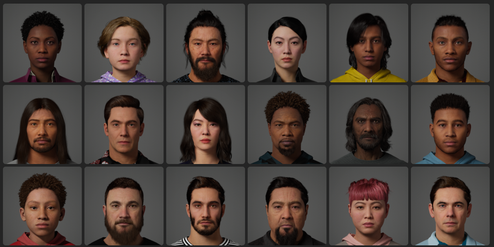
Metahumans
Unreal Metahumans are incredibly realistic digital characters that can be created for free with Unreal's Metahuman Creator. These characters can then be used in your Unreal projects and offer advanced facial animation capabilities.
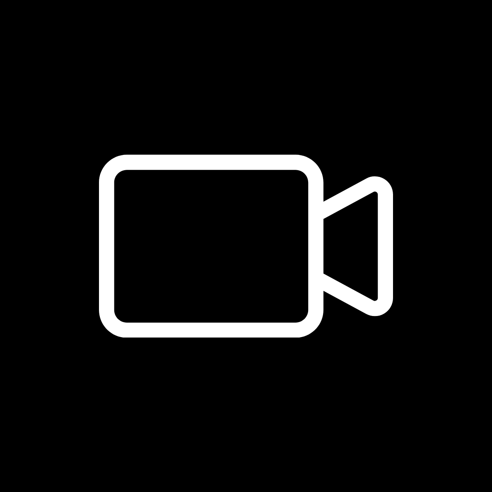
Capture Source
A Capture Source is an asset you create to let Unreal know what your performance footage is captured on and whether it is pre-recorded (Metahuman Animator mode in the Live Link Face app) or live streamed (Live Link ARKit mode in Live Link Face).
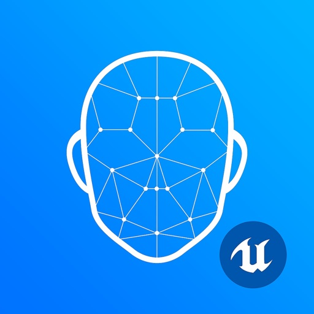
Live Link Face
Live Link Face is an iPhone application that is used to capture facial performance footage. These performances can either be streamed live to Unreal or recorded and imported in order to animate facial rigs on characters like Metahumans.
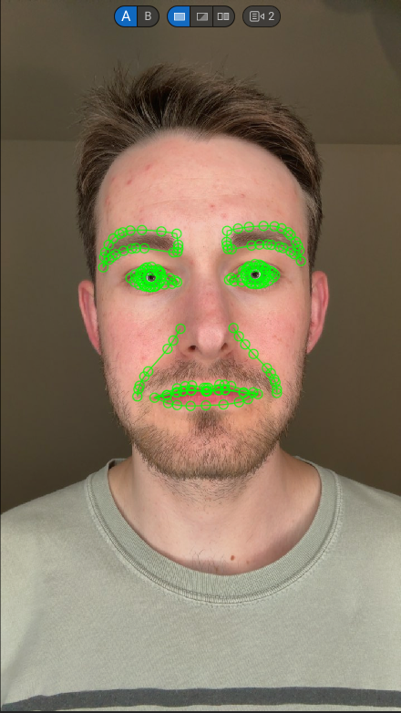
Metahuman ID (MHID)
A Metahuman ID (MHID) is an asset that calibrates a Metahuman face (rig) to a performer. A MHID needs to be created for each performer. MHIDs are also a crucial part of the Mesh to Metahuman workflow.
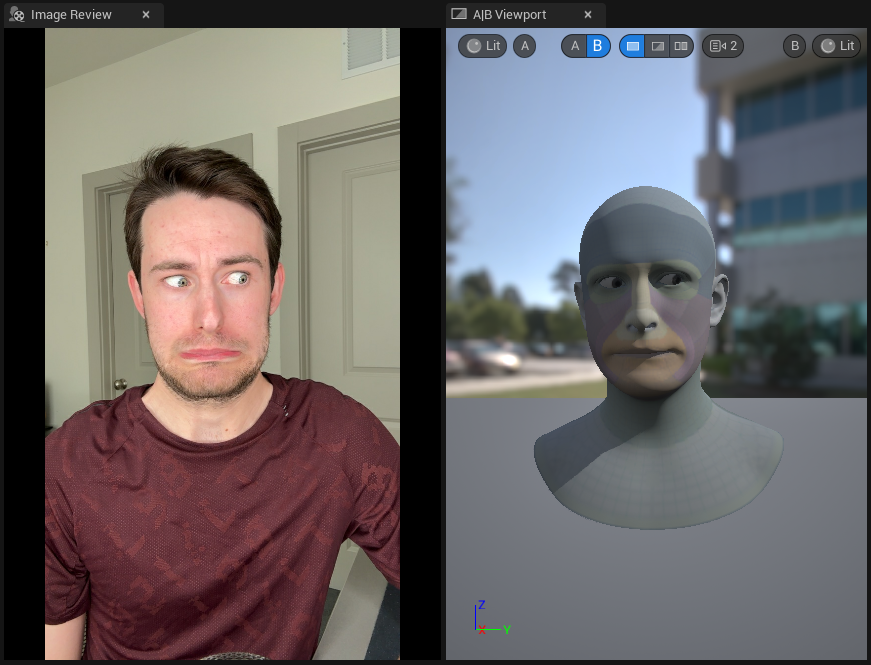
Metahuman Performance Asset
A Metahuman Performance Asset uses a Metahuman ID (MHID) to analyze footage capured with Live Link Face to create Metahuman facial animation (exported in the form of an Animation Sequence).
Quixel Bridge
Quixel Bridge is a plugin for Unreal Engine that allows you to download tons of free, high quality, 3D scans. It is also where you can download the Metahumans you created in Metahuman Creator.
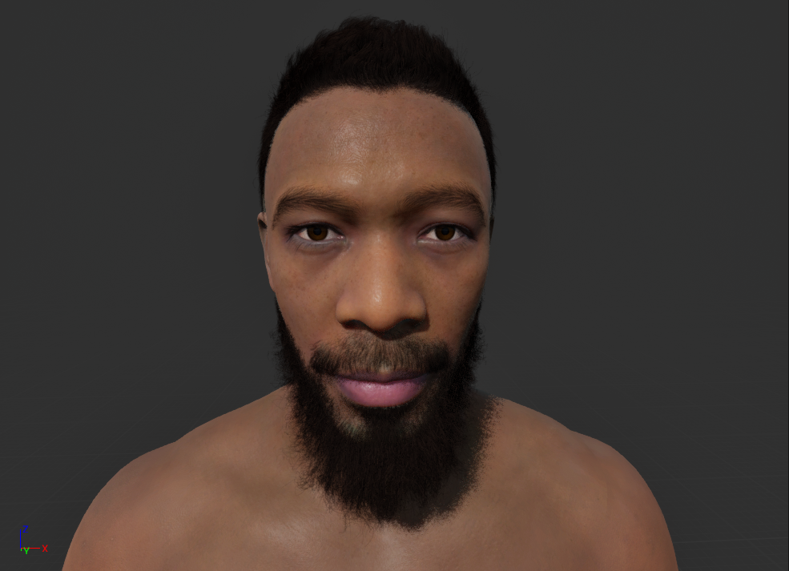
Metahuman Creator
Metahuman Creator is a cloud-based program accessed via a web browser. It allows you to design your own Metahuman. The Metahumans you create are then sent to Quixel Bridge so they can be downloaded into an Unreal project.
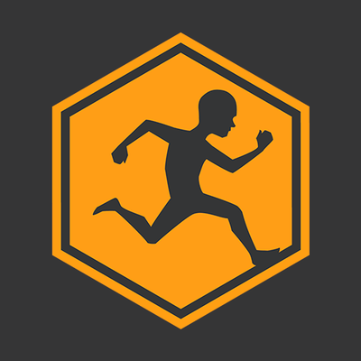
Mixamo
Mixamo is a site where you can download free animations created with motion capture. It is created by Adobe.
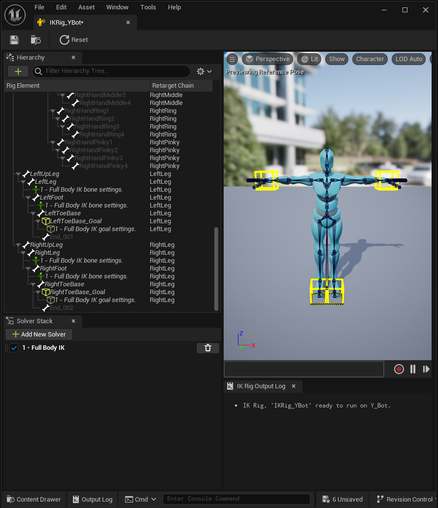
IK
IK is short for Inverse Kinematics. It is a method of rigging in Unreal that simplifies skeletal controls. For more information, check out Frankenstein Learning's Skeleton Crash Course.
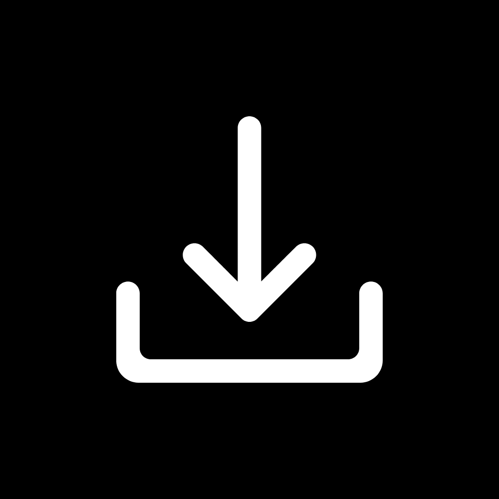
Capture Manager
Capture Manager is a tool in Unreal for ingesting recordings from sources like as the Live Link Face app.

Content Browser
Your content browser is where you can access all assets in your project.
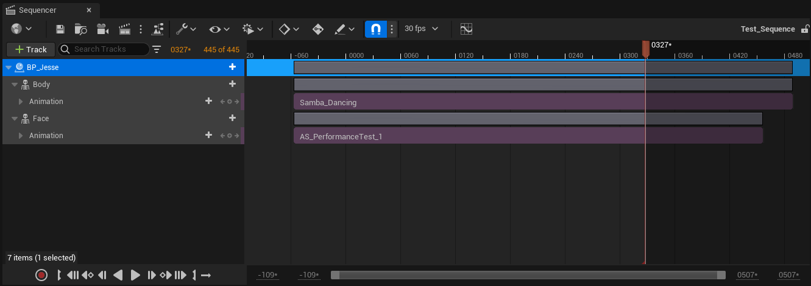
Sequencer
Sequencer is Unreal's tool for creating cinematic content, such as cut scenes and videos. It functions like a timeline in a video editing software.
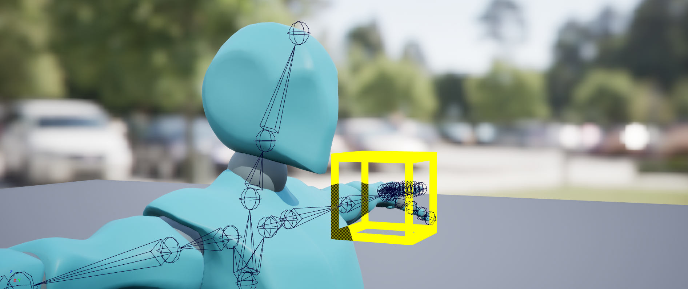
Control Rig
Control Rig is Unreal Engine's skeletal rigging system. For more information, check out my Unreal Skeleton Crash Course.
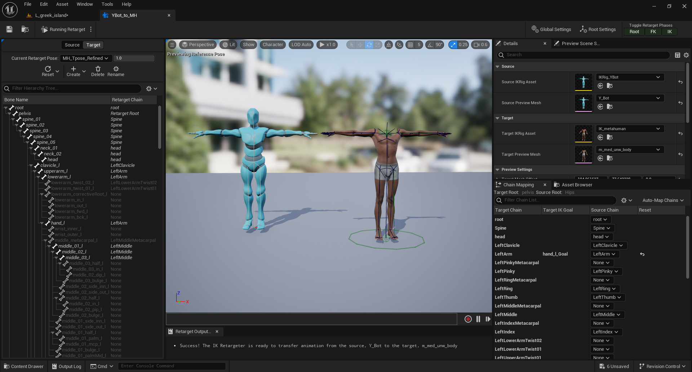
Retargeting
Retargeting is the process of mapping animation from one skeleton to another, allowing the same animation to be applied to different skeletons. For more information, check out the Metahuman Body Animation Guide.